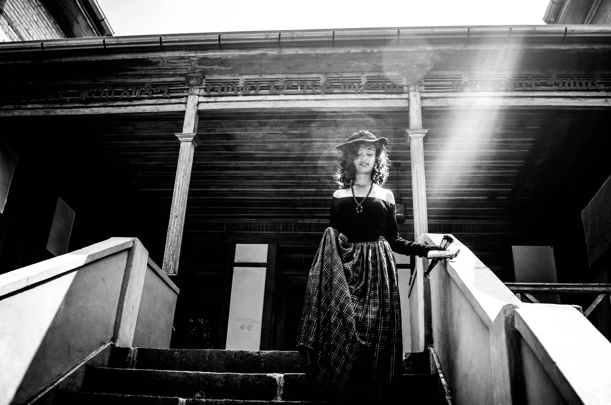
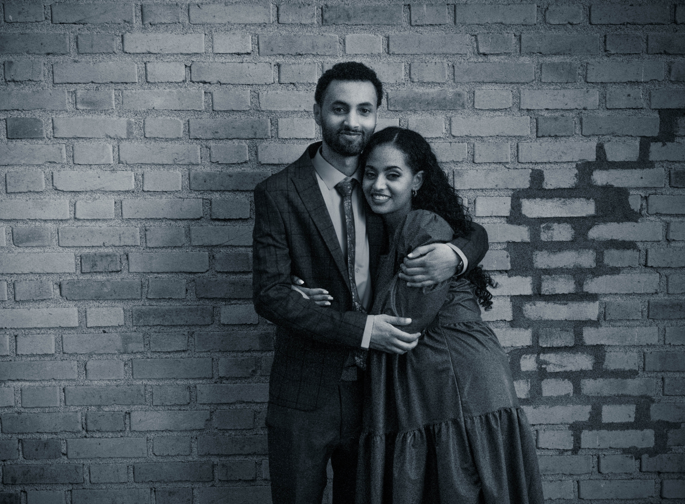
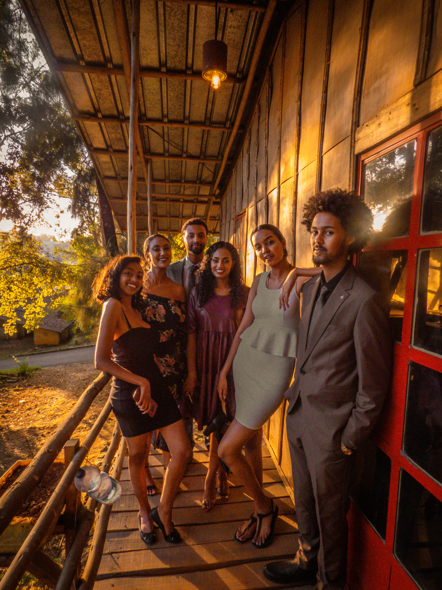

“One portfolio that shows both the photographs and the design sense — the images must lead, but the site has to feel designed.”
Photography portfolio · Framer
John’s Photography Portfolio
The problem: Show two capabilities at once — professional photography and modern web design — without letting either compete for attention.

From brief to build.
A five-page dark portfolio: pixel-serif identity, album chapters by discipline (branding, communication, travel, events), a bilingual Amharic editorial post, and a single-field enquiry on the contact page.
How I approached it.
The portfolio was treated like a gallery wall: a dark, quiet canvas, generous spacing, and an interface that stays out of the way. Work is curated into albums rather than an endless feed, so each set reads as a body of work.
What made it hard
- Giving photography and web design equal billing without visual noise.
- Keeping the viewer’s attention on the images, not the interface.
- Balancing minimalism with enough personality to be memorable.
Design decisions
The calls I made, and why.
A dark, gallery-grade canvas
Monochrome work reads as prints on a wall instead of thumbnails in a grid — the interface borrows from physical exhibition design.
A pixel-serif display voice
The “Jonny.A” wordmark and headlines use a pixelated serif: an ownable, recognizable identity that still frames photos without competing with them.
Album chapters over infinite scroll
The album page splits work into four disciplines with numbered columns — curated sets that respect the visitor’s time.
One-field enquiry
The contact hero asks for an email and nothing else; low friction suits a photographer’s audience.
The result
What it added up to.
The final portfolio communicates both a creative eye and technical skill in one experience — a gallery that is contemporary, engaging, and unmistakably his.
3weeks from brief to launch
5pages, gallery and album system
2languages — English and Amharic
100%responsive, built in Framer


“Johnny redesigned a few of our pages. The results were beyond expectation. He understood my vision and turned it into impactful designs.”
Anteneh DemeseMarketing DirectorLive preview
Explore the real site.
This is the actual website running inside the frame — scroll it, click through it, or open it in a new tab.
Start a project
Tell me what you are building.
Send the shape of the idea: the audience, the constraint, the deadline you are working to. You get a reply within one working day, and a written scope before any work starts.
- yohannesassefa17@gmail.com
- +251 92 124 4796
- Addis Ababa, Ethiopia · GMT+3